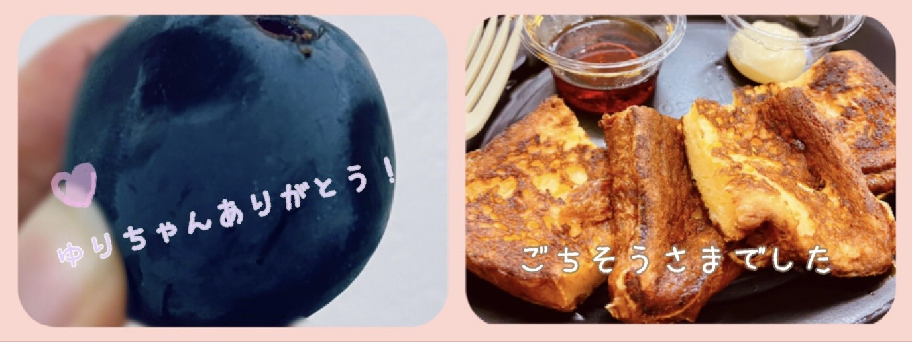
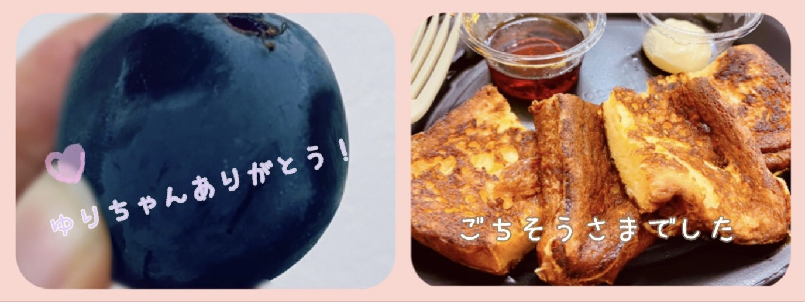

2020/1108Sunもこもこあったまってね ☺︎ 黒見明香(16)
寒いねー(*´-`) 今週もお疲れ様でした✩︎⡱
ココを見つけてくださり ありがとうございます♪
乃木坂46 新４期生の黒見明香です。
すこーしだけ自己紹介させてください☺︎
♪:*:･･:*:･･:*:･･:*:･･:*:･･:*:･♪:*:･･:*:･･:*:･･:*:･･:*:･･:*:･♪
黒見 明香（くろみ はるか）
2004年1月19日生まれ 16才
香港生まれ・東京都出身です
あだ名： くろみん・黒見ちゃん
3の倍数9・6・3(くろみ)
と覚えてもらえたら嬉しいです♪
＊
↓頂いたコメントから
◎ 林ちゃんが番組で言ってた「黒見は全体的にヤバい」って意味が分かってきたぞ笑
バレちゃったかな...!?笑
小学校の頃、修行したら"忍者"になれると思って
こっそりリコーダーを持ってお風呂に入って、
『水とんの術！』をやってみたら、
"ピィーーー！"という音が響いて、溺れかけて
ものすご〜く 怒られました・・・Σ（ﾟдﾟll）
＊
先週、打ち合わせで「忍者」のお話をしたら、
苦笑いなさってました...汗
キスの手裏剣を投げたんだぁ〜♬
♪:*:･･:*:･･:*:･･:*:･･:*:･･:*:･♪:*:･･:*:･･:*:･･:*:･･:*:･･:*:･♪

-:-:୨୧:-:- 風邪ひいちゃダメだよ〜♪一緒に暖かくしようね✩︎⡱
⚫︎高い山はもう雪積もってますよ
⚫︎寒さには強い？
すっかり寒くなったねー！
もう地元に雪が近づいている方もたくさんいるなんて、
冬がそこまで来てるんだね(*´-`)
寒さはあまり強くないけれど、あなたのこと、乃木坂のこと...
考えると心がぽかぽかして、忘れられるよ〜☺︎
♬ *。♩*。♬
⚫︎ もう冬になりそうだけど、冬と言えば何ですかー？
冬といえば、ここのとこは、バースデーライブのイメージがあるけれど、
寒い季節に、一緒にアツくなれる時間✨
すっごく待ち遠しいよね (*ˊᵕˋ*)੭
そんなアナタに・・・
【 決定！乃木坂46 4期生ライブ 2020✨ 】
12月6日（日）「乃木坂46 4期生ライブ 2020」
決定しました〜！
⚫︎ライブがまた見たいと思ってたので、めちゃくちゃ嬉しいです！
⚫︎ひと足早いクリスマスプレゼント楽しみにしています。
４期生皆んなで、とっても喜びました♡
16人で一緒にライブに挑戦させて頂けることが本当に有難くて、今からもう、胸がドキドキしています✨
皆さんに、必ず素敵なライブをお届けできるように、そして安心して頂けるように！全力で頑張ります (. ≧ω≦)ﾉ
経験あるカッコいい４期の皆んなの足を引っ張らないよう、沢山教えて貰って、懸命に努めるね！
♪:*:･･:*:･･:*:･･:*:･･:*:･･:*:･♪:*:･･:*:･･:*:･･:*:･･:*:･･:*:･♪

-:-:୨୧:-:- 初めての"anan"撮影は、想像力が広がるとっても楽しい時間でした〜✨
【 anan2224号『女子の流行りモノ '20秋』】
11/4(水)発売のanan様では、全メンバー撮り下ろしを掲載して頂きました✩︎⡱
⚫︎一時間おしゃべりをしたんだ、楽しかった～?
新４期5人で、1時間たっぷり、いろんなブームについてお話しさせて頂いたよ☺︎
すっごく楽しくて、お互いのブームを試しあったりして
とても幸せな時間を頂きました(〃ω〃)
先輩方の"流行りモノ"も個性溢れてて、熟読しているよ〜✨
⚫︎くろみんのマイブーム。知らない人が見たらびっくりしただろうね笑
⚫︎えっ、この本ananよね？って表紙見返したり笑
初めての女性誌で、また新しい感じで、、
本当に畏れ多い、恥ずかしい気持ちもいっぱいですが...
あたたかく5人の話を聞いて下さり、盛り上げてくださった
編集部・スタッフの皆さまの愛に心から感謝しています((〃ω〃))
＊
でもね、"私のマイブーム"のおかげで
すこーし二の腕のぷにぷにが解消されてきた気がする・・・
よかったら、ぜひチェックしてみてくださいね♪笑
♬ *。♩*。♬
⚫︎anan読みましたよ。「焼き小籠包」ってどんな感じ？
小籠包の肉汁と具材を包む皮が、焼いてあって
外は香ばしくて、中はジューシーですごくオススメだよー！
全国の中華街などに行く機会があったら、ぜひ試してみてね (*ˊᵕˋ*)੭
⚫︎ いいドライヤー見つかってよかったね。
そうなの〜！このあいだ、弓木奈於ちゃんに私のドライヤー貸してあげたの。
「めっちゃ髪綺麗になったぁー✨」て喜んでくれました☺︎
髪長い子には、ぜひぜひオススメだよ〜！
♪:*:･･:*:･･:*:･･:*:･･:*:･･:*:･♪:*:･･:*:･･:*:･･:*:･･:*:･･:*:･♪

-:-:୨୧:-:- 名前順に、隣の璃果ちゃん(マネキン)をイメージして、いっぱい心のハートを飛ばしたんだよ♡フフ
⚫︎ananくろみん達のファッションもお洒落だね～オフショット、あったりしますか?
実は、こんな感じだったんだよ〜ヾ(･ω･*)o
編集部の方が、
" 笑うと幼くなるところ、左右のえくぼが違うところの『ギャップ』が良いね☺︎ "
と優しくお話ししてくださって、
今まで16年、えくぼの違いに気づいてなかったので、
さすがプロの方は凄いなぁ...✨有難いなぁ...と思いました。
＊
このお仕事は、気付いてない自分のことを知っていく「自分を知る旅」のような感じもあるんだなぁ...て思いました。
ずっと"...運動下手だし、赤点多いし、絵も下手だし..."
と思うことばかりだったけれど、、、
「あなたにしかない個性」「そのままで良いんだよ」って
言って頂いた、教えてもらった気がしています。。。
＊
だから、あなたにも、それを伝えたいなぁ...てすごく思います。
"やっぱり自分の人生に、こんな良いこと起こるはずがなかった"
って諦めそうになった経験があるから、
伝わると良いなぁ...
がっかりしてるあなた、悔しい思いに呑まれそうになってるあなたと
手を取り合って、一緒に、坂を登りたいです。
説明下手でごめんね><
頑張っているあなたに、辛い思いをしているあなたに、
どうか、少しでも伝わりますように...✩︎⡱
＊
【 乃木坂46リズムフェスティバル✨】
⚫︎ついに！乃木フェスに新4期生実装ですね！めちゃくちゃ楽しみ
⚫︎明日からananコラボガチャがくるから絶対当てたいなー
明日11月9日(月)から、
リズムフェスティバルに新４期生も登場させて頂きます〜 (*ˊᵕˋ*)੭やったぁー！
♬ *。♩*。♬
⚫︎初めての乃木フェス用のカードの撮影は緊張しましたか？
とっても緊張しました、でもゲーム大好きなので、プレイしてくれるあなたのことを思い浮かべながら、ドキドキ撮って貰ったよ〜✨
『anan×乃木フェス』コラボも、ぜひ楽しんでねー!!
⚫︎ くろみんは乃木フェスはしますか？音ゲーは得意ですか？
うん！イベントもやろうかなって思ってるよ〜♪
実は、そんなに得意じゃないのだけど\(//∇//)\
うまくやるコツとかあったら、ぜひコッソリ！？教えてくださいね☺︎笑
♪:*:･･:*:･･:*:･･:*:･･:*:･･:*:･♪:*:･･:*:･･:*:･･:*:･･:*:･･:*:･♪

-:-:୨୧:-:- とってもステキな新制服✨上着を脱いだらこんな感じだよ〜☺︎（寝起きでごめんなさい〜）
【 新しい制服✨ 】
⚫︎高校生クイズで新制服がお披露目されたね〜！
⚫︎新制服のデザイン 可愛いよね！来てるの早くみたい！！！笑
中はこんな感じで、首元が『襟バージョン＊リボンバージョン』があって、爽やか、色もとっても可愛いですよね〜♡
寝起きぼーっとしてる時ので、まったり目がトロンとしてますね..（´-`）.｡oO
上着を羽織った正装はまた今度、載せさせて下さいね✨
⚫︎「明日がある理由」自分は優しく応援してくれてる歌って感じたけど、くろみんはどう思いますか？
やさしくて、勇気づけられるステキな応援ソングですよね〜♪
サビの片足トントントンって歩くところも可愛いなぁってキュンとしました✩︎⡱
私も学校頑張ろうっ、いつか応援ソングを歌えるよう頑張ろうって心から思いました☺︎
大好きな一曲になりました (*ˊᵕˋ*)੭
【 ノギザカスキッツACT 2 ♬ 】
⚫︎乃木坂スキッツ第2弾おめでとーーー！毎週リアタイで頑張ってるのでマジで嬉しかった！
⚫︎くろみんの悟空のモノマネを見てくろみんを応援したいって思ったよー。
いよいよ明日深夜から、2ndシーズンスタートですね✩︎⡱
本当にありがとう><
皆んなの存在で、不安なことも勇気がわいて、頑張れます✨
⚫︎挑戦する事が大事なので、結果滑ったとしても大丈夫です。
⚫︎もっと自分自身の「喜怒哀楽」を表に出してった方が、これからもっと成長できると思うよ？？
たくさんのアドバイスやコメント、ホントにありがとう！
皆んなのアドバイスを大事に胸に刻んで、ACT 2 も全力で楽しく頑張ります☺︎
新しい姿をお届けできますように・・・✨
いっぱい楽しんでもらえますようにー！エンジン全開で行きます (*ˊᵕˋ*)੭笑
♪:*:･･:*:･･:*:･･:*:･･:*:･･:*:･♪:*:･･:*:･･:*:･･:*:･･:*:･･:*:･♪

-:-:୨୧:-:- 白石麻衣さんの卒業コンサートの日のちょこっと舞台裏・食べ物編だよ〜☺︎笑
【 卒業コンサート番外編・食べ物☺︎ 】
⚫︎黒見ちゃんのダブルピースを集めるのを趣味にしようかと思うくらい好きです。
⚫︎私は笑顔を上手につくることが苦手です。笑顔をつくるためのトレーニングとかコツはありますか？
○白石麻衣さん♡が"最初は笑顔が苦手だった..."とお話されてたように、ゆっくり、少しずつ練習できたらいいのかなぁ...て思っているよー☺︎
＊
♬ *。♩*。♬
⚫︎学校でのお話もっと聞きたいです！もうすぐ歌のテスト、コツとかあれば教えてください！
♬ *。♩*。♬
⚫︎後輩からは、「黒見先輩」「明香先輩」もしくは他になんと呼ばれたいですか？
⚫︎役に立てるような人になりたくて、乃木坂46に入りたいです。
⚫︎施されたら施し返す恩返しです
⚫︎自己紹介は毎回書かなくてもいいんじゃないかな？こんな事言ってごめんね...
⚫︎沢山書きたいことがあるから長くなっちゃうのはわかるけど私は短くて読みやすい方がいいなって思う。たまに短くて読みやすくしてみたらどうかな？
⚫︎毎回のラッキーナンバーはどうやって決めてるの？笑
＜ゲームコーナー✨＞
⚫︎ プロスピのアニバーサリーのためにエナジーを溜めてたから選択契約書は引かないことにしましたよ！
○エナジー集めとアニバーサリーお疲れ様！私は60連して福袋で選択契約書ももらう予定だよー！
⚫︎ スターロードは終わりましたか？
○終わってアニバーサリー第2弾のSランク契約書獲得したよ〜！
⚫︎ プロスピやっていて初めての覚醒だったから嬉しいよ
○覚醒できると嬉しいよね！
私は覚醒した選手2人しかいないからもっと覚醒できたら良いなと思ってるよ〜
⚫︎ 黒見ちゃんのアニバの結果も楽しみ！
俺はアニバ引くの我慢して、OBで日ハムの選手狙うことにした！
○OBも気になるけどアニバーサリーの方を引きたいからアニバーサリーの方にするよー！
⚫︎ あつ森のお話です！カボチャの馬車をもらったり、レシピを教えてもらえました
模試や連勤、繁忙期、最終便担当頑張ってるよー！82km歩いたm体育祭で賞獲ったよー！受験勉強ラストスパート、後輩の面倒みるの頑張るよ〜というお話もありがとう！今回残念だったけど、次も頑張るね！という報告もありがとう！いろいろ大変だと思うけれど、一緒に頑張ろうねー (. ≧ω≦)ﾉ
＜お誕生日おめでとうございます✨＞
◎ 11月10日は、阪口珠美♡さんのお誕生日ですね♪
絶対笑顔になれる"たまトレ"！大好きで、４期の皆んなと一緒にトレーニングさせていただいています。伊藤理々杏さん♡とのおうちフィットネスもヘルシーで美しくて、明るい笑顔と、バレリーナの綺麗な姿勢がカッコよくて、憧れています。
おめでとうございます！どうぞ楽しい一年になりますように✩︎⡱
そして、お誕生日を迎えるあなたへ・・
✨HAPPY BIRTHDAY✨
どうぞ素敵な一年になりますよう✩︎⡱
♪:*:･･:*:･･:*:･･:*:･･:*:･･:*:･♪:*:･･:*:･･:*:･･:*:･･:*:･･:*:･♪
ここまで読んでくださったアナタ、ほんとうにありがとう♡
またねヾ(･ω･*)
ココを見つけてくださり ありがとうございます♪
乃木坂46 新４期生の黒見明香です。
すこーしだけ自己紹介させてください☺︎
♪:*:･･:*:･･:*:･･:*:･･:*:･･:*:･♪:*:･･:*:･･:*:･･:*:･･:*:･･:*:･♪
黒見 明香（くろみ はるか）
2004年1月19日生まれ 16才
香港生まれ・東京都出身です
あだ名： くろみん・黒見ちゃん
3の倍数9・6・3(くろみ)
と覚えてもらえたら嬉しいです♪
＊
↓頂いたコメントから
◎ 林ちゃんが番組で言ってた「黒見は全体的にヤバい」って意味が分かってきたぞ笑
バレちゃったかな...!?笑
小学校の頃、修行したら"忍者"になれると思って
こっそりリコーダーを持ってお風呂に入って、
『水とんの術！』をやってみたら、
"ピィーーー！"という音が響いて、溺れかけて
ものすご〜く 怒られました・・・Σ（ﾟдﾟll）
＊
先週、打ち合わせで「忍者」のお話をしたら、
苦笑いなさってました...汗
キスの手裏剣を投げたんだぁ〜♬
♪:*:･･:*:･･:*:･･:*:･･:*:･･:*:･♪:*:･･:*:･･:*:･･:*:･･:*:･･:*:･♪
-:-:୨୧:-:- 風邪ひいちゃダメだよ〜♪一緒に暖かくしようね✩︎⡱
⚫︎高い山はもう雪積もってますよ
⚫︎寒さには強い？
すっかり寒くなったねー！
もう地元に雪が近づいている方もたくさんいるなんて、
冬がそこまで来てるんだね(*´-`)
寒さはあまり強くないけれど、あなたのこと、乃木坂のこと...
考えると心がぽかぽかして、忘れられるよ〜☺︎
♬ *。♩*。♬
⚫︎ もう冬になりそうだけど、冬と言えば何ですかー？
冬といえば、ここのとこは、バースデーライブのイメージがあるけれど、
寒い季節に、一緒にアツくなれる時間✨
すっごく待ち遠しいよね (*ˊᵕˋ*)੭
そんなアナタに・・・
【 決定！乃木坂46 4期生ライブ 2020✨ 】
12月6日（日）「乃木坂46 4期生ライブ 2020」
決定しました〜！
⚫︎ライブがまた見たいと思ってたので、めちゃくちゃ嬉しいです！
⚫︎ひと足早いクリスマスプレゼント楽しみにしています。
４期生皆んなで、とっても喜びました♡
16人で一緒にライブに挑戦させて頂けることが本当に有難くて、今からもう、胸がドキドキしています✨
皆さんに、必ず素敵なライブをお届けできるように、そして安心して頂けるように！全力で頑張ります (. ≧ω≦)ﾉ
経験あるカッコいい４期の皆んなの足を引っ張らないよう、沢山教えて貰って、懸命に努めるね！
♪:*:･･:*:･･:*:･･:*:･･:*:･･:*:･♪:*:･･:*:･･:*:･･:*:･･:*:･･:*:･♪
-:-:୨୧:-:- 初めての"anan"撮影は、想像力が広がるとっても楽しい時間でした〜✨
【 anan2224号『女子の流行りモノ '20秋』】
11/4(水)発売のanan様では、全メンバー撮り下ろしを掲載して頂きました✩︎⡱
⚫︎一時間おしゃべりをしたんだ、楽しかった～?
新４期5人で、1時間たっぷり、いろんなブームについてお話しさせて頂いたよ☺︎
すっごく楽しくて、お互いのブームを試しあったりして
とても幸せな時間を頂きました(〃ω〃)
先輩方の"流行りモノ"も個性溢れてて、熟読しているよ〜✨
⚫︎くろみんのマイブーム。知らない人が見たらびっくりしただろうね笑
⚫︎えっ、この本ananよね？って表紙見返したり笑
初めての女性誌で、また新しい感じで、、
本当に畏れ多い、恥ずかしい気持ちもいっぱいですが...
あたたかく5人の話を聞いて下さり、盛り上げてくださった
編集部・スタッフの皆さまの愛に心から感謝しています((〃ω〃))
＊
でもね、"私のマイブーム"のおかげで
すこーし二の腕のぷにぷにが解消されてきた気がする・・・
よかったら、ぜひチェックしてみてくださいね♪笑
♬ *。♩*。♬
⚫︎anan読みましたよ。「焼き小籠包」ってどんな感じ？
小籠包の肉汁と具材を包む皮が、焼いてあって
外は香ばしくて、中はジューシーですごくオススメだよー！
全国の中華街などに行く機会があったら、ぜひ試してみてね (*ˊᵕˋ*)੭
⚫︎ いいドライヤー見つかってよかったね。
そうなの〜！このあいだ、弓木奈於ちゃんに私のドライヤー貸してあげたの。
「めっちゃ髪綺麗になったぁー✨」て喜んでくれました☺︎
髪長い子には、ぜひぜひオススメだよ〜！
♪:*:･･:*:･･:*:･･:*:･･:*:･･:*:･♪:*:･･:*:･･:*:･･:*:･･:*:･･:*:･♪
-:-:୨୧:-:- 名前順に、隣の璃果ちゃん(マネキン)をイメージして、いっぱい心のハートを飛ばしたんだよ♡フフ
⚫︎ananくろみん達のファッションもお洒落だね～オフショット、あったりしますか?
実は、こんな感じだったんだよ〜ヾ(･ω･*)o
編集部の方が、
" 笑うと幼くなるところ、左右のえくぼが違うところの『ギャップ』が良いね☺︎ "
と優しくお話ししてくださって、
今まで16年、えくぼの違いに気づいてなかったので、
さすがプロの方は凄いなぁ...✨有難いなぁ...と思いました。
＊
このお仕事は、気付いてない自分のことを知っていく「自分を知る旅」のような感じもあるんだなぁ...て思いました。
ずっと"...運動下手だし、赤点多いし、絵も下手だし..."
と思うことばかりだったけれど、、、
「あなたにしかない個性」「そのままで良いんだよ」って
言って頂いた、教えてもらった気がしています。。。
＊
だから、あなたにも、それを伝えたいなぁ...てすごく思います。
"やっぱり自分の人生に、こんな良いこと起こるはずがなかった"
って諦めそうになった経験があるから、
伝わると良いなぁ...
がっかりしてるあなた、悔しい思いに呑まれそうになってるあなたと
手を取り合って、一緒に、坂を登りたいです。
説明下手でごめんね><
頑張っているあなたに、辛い思いをしているあなたに、
どうか、少しでも伝わりますように...✩︎⡱
＊
【 乃木坂46リズムフェスティバル✨】
⚫︎ついに！乃木フェスに新4期生実装ですね！めちゃくちゃ楽しみ
⚫︎明日からananコラボガチャがくるから絶対当てたいなー
明日11月9日(月)から、
リズムフェスティバルに新４期生も登場させて頂きます〜 (*ˊᵕˋ*)੭やったぁー！
♬ *。♩*。♬
⚫︎初めての乃木フェス用のカードの撮影は緊張しましたか？
とっても緊張しました、でもゲーム大好きなので、プレイしてくれるあなたのことを思い浮かべながら、ドキドキ撮って貰ったよ〜✨
『anan×乃木フェス』コラボも、ぜひ楽しんでねー!!
⚫︎ くろみんは乃木フェスはしますか？音ゲーは得意ですか？
うん！イベントもやろうかなって思ってるよ〜♪
実は、そんなに得意じゃないのだけど\(//∇//)\
うまくやるコツとかあったら、ぜひコッソリ！？教えてくださいね☺︎笑
♪:*:･･:*:･･:*:･･:*:･･:*:･･:*:･♪:*:･･:*:･･:*:･･:*:･･:*:･･:*:･♪
-:-:୨୧:-:- とってもステキな新制服✨上着を脱いだらこんな感じだよ〜☺︎（寝起きでごめんなさい〜）
【 新しい制服✨ 】
⚫︎高校生クイズで新制服がお披露目されたね〜！
⚫︎新制服のデザイン 可愛いよね！来てるの早くみたい！！！笑
中はこんな感じで、首元が『襟バージョン＊リボンバージョン』があって、爽やか、色もとっても可愛いですよね〜♡
寝起きぼーっとしてる時ので、まったり目がトロンとしてますね..（´-`）.｡oO
上着を羽織った正装はまた今度、載せさせて下さいね✨
⚫︎「明日がある理由」自分は優しく応援してくれてる歌って感じたけど、くろみんはどう思いますか？
やさしくて、勇気づけられるステキな応援ソングですよね〜♪
サビの片足トントントンって歩くところも可愛いなぁってキュンとしました✩︎⡱
私も学校頑張ろうっ、いつか応援ソングを歌えるよう頑張ろうって心から思いました☺︎
大好きな一曲になりました (*ˊᵕˋ*)੭
【 ノギザカスキッツACT 2 ♬ 】
⚫︎乃木坂スキッツ第2弾おめでとーーー！毎週リアタイで頑張ってるのでマジで嬉しかった！
⚫︎くろみんの悟空のモノマネを見てくろみんを応援したいって思ったよー。
いよいよ明日深夜から、2ndシーズンスタートですね✩︎⡱
本当にありがとう><
皆んなの存在で、不安なことも勇気がわいて、頑張れます✨
⚫︎挑戦する事が大事なので、結果滑ったとしても大丈夫です。
⚫︎もっと自分自身の「喜怒哀楽」を表に出してった方が、これからもっと成長できると思うよ？？
たくさんのアドバイスやコメント、ホントにありがとう！
皆んなのアドバイスを大事に胸に刻んで、ACT 2 も全力で楽しく頑張ります☺︎
新しい姿をお届けできますように・・・✨
いっぱい楽しんでもらえますようにー！エンジン全開で行きます (*ˊᵕˋ*)੭笑
♪:*:･･:*:･･:*:･･:*:･･:*:･･:*:･♪:*:･･:*:･･:*:･･:*:･･:*:･･:*:･♪

-:-:୨୧:-:- 白石麻衣さんの卒業コンサートの日のちょこっと舞台裏・食べ物編だよ〜☺︎笑
【 卒業コンサート番外編・食べ物☺︎ 】
⚫︎ファンとしては、ライブの裏側とか知りたいからありがたい。
⚫︎乃木中のライブ潜入回好きやねん。くろみんもそうやったりする？笑
わたしも大好きです...\(//∇//)\
牛タンや、はくまい等大好きなシーンが沢山あります。
そんなわけで、ちょこっとだけ、、、（怒らないでね^^;)
◎北川悠理ちゃん♡が、「潜在能力テスト」さんに出演した際に、獲得したぶどうを、皆んなに分けてくれたのーー！
メンバー皆んなで幸せを分けてもらって、優しい悠理ちゃん♡にいっぱいパワー貰ったよ✨本当にありがとう♪
◎お弁当の他にも、パンケーキ・フレンチトースト・ワッフルを置いて下さっていました！
「これは、乃木坂工事中で見ていた・・・((〃ω〃))」とコッソリ感激しながら、わたしはフレンチトーストを頂きました✨メンバー1番人気はパンケーキだったよ〜！
大切な大切な一日も、美味しい食べ物も一層エネルギーを頂きました♬
ありがとうございました。
他にも、憧れの与田祐希さん♡と写真撮って頂いたり、大好きな向井葉月さん♡とギターのお話をさせて頂いたりと、忘れられない嬉しい想い出いっぱいの日でした✩︎⡱
- - -
本当のマジメな感謝や想いは、ココをみてね笑↓
『さよならをありがとう。』
『先輩方の優しさに涙した日...』
⚫︎なぁちゃんが「私たちにしてもらって、もしうれしかったことがああったら同じことをこれから入ってくる後輩ちゃんにしてあげて」って言葉をみんな当たり前に実践できてるんだよね。
本当に｡ﾟ(｡ﾉω＼｡)ﾟ｡
こうして憧れのやさしくてカッコいい先輩方に教えて頂いていること、大切に、いつかまた新しいメンバーにも伝えられるよう、一回一回のお仕事を大事に、懸命に頑張ります。
♬ *。♩*。♬
【 2021 オフィシャルカレンダー 】
⚫︎来年のカレンダー販売のお知らせもあったね。
2021年 オフィシャルカレンダーの販売が始まりました〜☺︎
"壁掛けカレンダー"と"個別卓上カレンダー"タイプがあるよー。
初めてのカレンダー✨
すごくドキドキ畏れ多い気持ちと...嬉しくて恥ずかしい気持ちです((〃ω〃))
⚫︎公式卓上カレンダーは、来年黒見で過ごすね
ありがとうー！いつも一緒に居られる気がして、すっごく嬉しいな〜(*´-`)
わたしも、机に卓上カレンダーおいて皆んなとお揃いにするねー✩︎⡱
直筆サイン入りの生写真が当たるチャンス等もあるので(描かせて頂いたよー！）よかったらチェックしてみて下さいな〜♪
♬ *。♩*。♬
【 鈴木絢音さん♡ 】
明後日11月10日には、ついに鈴木絢音さん♡の1st写真集
『光の角度』が発売になりますね！
松村沙友理さん♡鈴木絢音さん♡と共に参加させて頂いた
「乃木坂46オフィシャルWeibo300万人直前特別生配信」の時に
初めてお話しさせていただきました☺︎
＊
「デビュー直後にこのような期間を迎えて、
いろいろと制限されちゃったり、
悩んだ事も多かったかもしれないけれど。。。
これが新４期のみんなの"良い糧" になるかもしれないね✨」
とお話しして下さり、アドバイス下さり、
あとで、新４期の５人皆で 優しさに感動していたことを
昨日のことのように覚えています(*´-`)
舞台「銀河鉄道の父」でのトシ役も心に残っている憧れの方です✩︎⡱
＊
絢音さんの自然な美しいお姿と、タヒチの景色、すごく楽しみですー♪
どのポストカードかなぁ...♡
Weibo特別生配信の時のエピソード・写真はこちら☺︎↓
https://blog.nogizaka46.com/newfourth/smph/2020/06/056863.php
https://blog.nogizaka46.com/newfourth/smph/2020/06/056863.php
♪:*:･･:*:･･:*:･･:*:･･:*:･･:*:･♪:*:･･:*:･･:*:･･:*:･･:*:･･:*:･♪
ブログやお手紙で、たくさんのコメントや感想送って下さり
本当にありがとうございます✩︎⡱
今回、初めてコメントしました！というあなたも、
毎日"おやすみなさい"を伝えて下さるあなたも、
大切な時間を使ってお話しして下さり
本当にありがとうございます✨
あなたに出逢えた奇跡に、感謝しながら、
大事に、一つずつ全部読ませて頂いています((〃ω〃))
皆さんのことを知ることが出来る、
私の１日の中で『１番幸せな時間』です♩
直接お話しできる時が、 待ち遠しいです✩︎⡱
＊
週末のんびり過ごせたよ〜という方も、
寒い日が続いて、仕事や勉強が忙しかったり、
なんだか体調イマイチだよー、疲れちゃったよーって方も
本当に、今日も一日 お疲れ様でした✩︎⡱
きっと心も、身体も、しんどい時もあるかと思います。。
どうぞ、皆さんが 少しでも
ひとときリラックスできますように...✩︎⡱
と願っています(*´-`)
初めて会える日を、楽しみに待っています♪
＊
明日は、今夜のらじらー！頑張る璃果ちゃんですよー♬
読んでくださり、本当にありがとうございます☺︎
次回も、会えたら嬉しいなぁ✨
またねヾ(･ω･*)
くろみはるか☺︎
☆ 本日のあなたのラッキーナンバー：❶ と ❺
♪:*:･･:*:･･:*:･･:*:･･:*:･･:*:･♪:*:･･:*:･･:*:･･:*:･･:*:･･:*:･♪
・
・
・
＜ちょこっとアンコール♬笑＞
すごく長いので、時間ある時にでも☺︎笑
♬ *。♩*。♬
⚫︎劇場版「鬼滅の刃」無限列車編は観たかな？まだなら是非お薦めします(*^^*)
⚫︎鬼滅のテーマは想いを「つなぐ」事、乃木坂と一緒だよ。
ブログやお手紙で、たくさんのコメントや感想送って下さり
本当にありがとうございます✩︎⡱
今回、初めてコメントしました！というあなたも、
毎日"おやすみなさい"を伝えて下さるあなたも、
大切な時間を使ってお話しして下さり
本当にありがとうございます✨
あなたに出逢えた奇跡に、感謝しながら、
大事に、一つずつ全部読ませて頂いています((〃ω〃))
皆さんのことを知ることが出来る、
私の１日の中で『１番幸せな時間』です♩
直接お話しできる時が、 待ち遠しいです✩︎⡱
＊
週末のんびり過ごせたよ〜という方も、
寒い日が続いて、仕事や勉強が忙しかったり、
なんだか体調イマイチだよー、疲れちゃったよーって方も
本当に、今日も一日 お疲れ様でした✩︎⡱
きっと心も、身体も、しんどい時もあるかと思います。。
どうぞ、皆さんが 少しでも
ひとときリラックスできますように...✩︎⡱
と願っています(*´-`)
初めて会える日を、楽しみに待っています♪
＊
明日は、今夜のらじらー！頑張る璃果ちゃんですよー♬
読んでくださり、本当にありがとうございます☺︎
次回も、会えたら嬉しいなぁ✨
またねヾ(･ω･*)
くろみはるか☺︎
☆ 本日のあなたのラッキーナンバー：❶ と ❺
♪:*:･･:*:･･:*:･･:*:･･:*:･･:*:･♪:*:･･:*:･･:*:･･:*:･･:*:･･:*:･♪
・
・
・
＜ちょこっとアンコール♬笑＞
すごく長いので、時間ある時にでも☺︎笑
♬ *。♩*。♬
⚫︎劇場版「鬼滅の刃」無限列車編は観たかな？まだなら是非お薦めします(*^^*)
⚫︎鬼滅のテーマは想いを「つなぐ」事、乃木坂と一緒だよ。
まだなのです！ますます観なければ！ありがとうございます✨
⚫︎『金色のガッシュ』って漫画も読んでみて！！かずみんも昔、好きだって言ってたから
メモしましたー！ありがとうございます☺︎
♬ *。♩*。♬
⚫︎ダブルピースの変形バージョン、"ひめたんビーム"を受け継ぎましょう。
⚫︎『〇〇のWピースは世界を救う』でおなじみの元乃木坂メンバーを知っていますか？
⚫︎ダブルピースの変形バージョン、"ひめたんビーム"を受け継ぎましょう。
⚫︎『〇〇のWピースは世界を救う』でおなじみの元乃木坂メンバーを知っていますか？
○中元日芽香さん♡ 佐々木琴子さん♡ 心も美しい憧れの先輩方です。
畏れ多くとんでもないけれど...ピースも大事にしていきたいな、て思いました。
コメントありがとうー！
⚫︎黒見ちゃんのダブルピースを集めるのを趣味にしようかと思うくらい好きです。
○もしも集まったら、コレクション見せて下さいねー (*ˊᵕˋ*)੭ 笑
♬ *。♩*。♬
⚫︎去年の今頃は、研修生ツアーで泣いてる弓木ちゃんをくろみんが慰めていたなぁって話しで盛り上がったよ！
○懐かしいですね(*´-`)大阪2日目、ツアー最終日は涙が止まらなくなった私を瑠奈ぴが慰めてくれました。不思議な縁だなぁ...て思います。見守っててくれて嬉しいナ✨本当にありがとう！
♬ *。♩*。♬
⚫︎ ４期生は「夜明けまで強がらなくていい」だったね！
ちなみに...黒見ちゃんは4列目の真ん中で、裏センターだったね！
○よく、見つけてくれてありがとうー！
⚫︎ ４期生は「夜明けまで強がらなくていい」だったね！
ちなみに...黒見ちゃんは4列目の真ん中で、裏センターだったね！
○よく、見つけてくれてありがとうー！
美しく儚い白石麻衣さん♡さくちゃん♡の後ろを邪魔しないように、精一杯送り出せるよう...足引っ張らないよう...4期生の良さが伝わるように・・・といろいろと必死でした。皆んながたくさん教えてチェックしてくれて、本当に感謝しています。
♬ *。♩*。♬
○白石麻衣さん♡が"最初は笑顔が苦手だった..."とお話されてたように、ゆっくり、少しずつ練習できたらいいのかなぁ...て思っているよー☺︎
私も、迷走中だよー\(//∇//)\ 一緒に笑顔トレーニング、見つけようねー！
＊
⚫︎どうやったら夢は叶うと思いますか？( ˘ᵕ˘ )
○以前、先生が「合格のコツはとよく聞かれますが、それは"どんなことがあっても諦めない"ことです。絶対に諦めなかった人に幸運が訪れます」というお話をしてくれました。
もちろん、いろいろな状況があるかなぁ...て思います。もしできたらNever give upの精神で、なるべく何度転んでも立ち上がりたいな..と思っています。あまり参考になってないかもで、ごめんねー><
♬ *。♩*。♬
⚫︎学校でのお話もっと聞きたいです！もうすぐ歌のテスト、コツとかあれば教えてください！
○緊張すると、首や喉がキュッてしまっちゃいがちだから、なるべく首や口元をリラックスして楽しめたらいいなぁ...て
私もだね！笑 応援しているよー (*ˊᵕˋ*)੭ がんばってねー！
♬ *。♩*。♬
⚫︎後輩からは、「黒見先輩」「明香先輩」もしくは他になんと呼ばれたいですか？
⚫︎役に立てるような人になりたくて、乃木坂46に入りたいです。
⚫︎施されたら施し返す恩返しです
○まだまだ想像つかないけれど・・・
好きな呼び方で、気軽にお話ししてくれたら嬉しいなぁ。。
先輩たちに貰っているたくさんの愛を、いっぱい伝えられるよう頑張るね((〃ω〃))！
♬ *。♩*。♬
⚫︎自己紹介は毎回書かなくてもいいんじゃないかな？こんな事言ってごめんね...
○言い辛いこと、伝えてくれてありがとうー！
"初めて読みました"ていう方がいなくなったら、もうちょっとしたら外そうかな (*ˊᵕˋ*)੭
時期検討してみるね！ありがとう☺︎
⚫︎沢山書きたいことがあるから長くなっちゃうのはわかるけど私は短くて読みやすい方がいいなって思う。たまに短くて読みやすくしてみたらどうかな？
○ほんとだね！今度は短く簡潔にしてみようかな？
読みやすいよう、スクロールしなくて済むように"短くわかりやすく"チャレンジしてみるー！教えてくれてありがとう☺︎✨
♬ *。♩*。♬
⚫︎ブログ読んでると、なんだか話掛けられているような錯覚をします。実際の黒見ちゃんはよく喋る方なのですかね？
○お喋り大好きです。ノギザカスキッツでも「めっちゃ笑顔で超しょーもないこと言う」と言われていたとおりなので、面白くないかもです・・・笑いのセンス、磨きます！笑
♬ *。♩*。♬
⚫︎SHOWROOM個人配信いつか出来た時に、ファンの呼び方発表SPやってほしいなあ
⚫︎よく考えて可愛いファンネーム作って欲しいですね〜
○アイディア送ってくれてありがとうー！
それは素敵だね〜☺︎いろいろ練りねり、大切な皆さんのこと、考えさせて頂くね✨
♬ *。♩*。♬
⚫︎毎回のラッキーナンバーはどうやって決めてるの？笑
○すこーしだけ風水をかじっていたから、それで占っているよ〜✩︎⡱
⚫︎最近使っているおすすめのコスメを教えて欲しいです！
○炭酸の入ってるローションがとても気に入ってるよー！
シュワシュワ浸透する感じがして、化粧水の最後に使ってるよ☺︎
炭酸ミストを筋肉痛の時に、ふくらはぎにシューッとすることもあるよ。
個人差もあるかもしれないから、頼りにならないけれど笑よかったら、一度試してみてね♬
♬ *。♩*。♬
⚫︎I start my end of the year exams next Monday and if you could send me your well wishes, I would be extremely motivated to do my best!
○ Best wishes for your exams！ Don' t forget that I'll always be by your side:) hope you'll go well✨
♬ *。♩*。♬
＜ゲームコーナー✨＞
⚫︎ プロスピのアニバーサリーのためにエナジーを溜めてたから選択契約書は引かないことにしましたよ！
○エナジー集めとアニバーサリーお疲れ様！私は60連して福袋で選択契約書ももらう予定だよー！
⚫︎ スターロードは終わりましたか？
○終わってアニバーサリー第2弾のSランク契約書獲得したよ〜！
⚫︎ プロスピやっていて初めての覚醒だったから嬉しいよ
○覚醒できると嬉しいよね！
私は覚醒した選手2人しかいないからもっと覚醒できたら良いなと思ってるよ〜
⚫︎ 黒見ちゃんのアニバの結果も楽しみ！
俺はアニバ引くの我慢して、OBで日ハムの選手狙うことにした！
○OBも気になるけどアニバーサリーの方を引きたいからアニバーサリーの方にするよー！
⚫︎ あつ森のお話です！カボチャの馬車をもらったり、レシピを教えてもらえました
○私も〜！あつ森の中のハロウィンも楽しかったね☺︎
♬ *。♩*。♬
♬ *。♩*。♬
握力鍛えるハンドグリップのお話し、水の由来について、THE YELLOW MONKEYさん、スキマスイッチさんの歌詞、楽曲「旅人よ」、鯨の歌、80年台の音楽のお話、引退試合のこと、アニメ呪術廻戦やSPECやプリズンブレイクのこと、虹や焼き芋のこと、お団子ヘアのリクエストやWピースアレンジアイディアも、Wプレーや球技大会、爆笑と大笑いの違い、水泳と海の事、三線の練習や免許のこと、冬の鍋やチーズフォンデュやトゥンカロンの味、インスタグラムやガールズルールの特効、尊いさゆまいのお話も、コメントありがとう！
一つ一つ大切に読ませていただいているよ〜 (*ˊᵕˋ*)੭
(ブログはタブレットと携帯で書いているよ〜、「かべ逆立ち」再現はのんびり待っててね♪）
模試や連勤、繁忙期、最終便担当頑張ってるよー！82km歩いたm体育祭で賞獲ったよー！受験勉強ラストスパート、後輩の面倒みるの頑張るよ〜というお話もありがとう！今回残念だったけど、次も頑張るね！という報告もありがとう！いろいろ大変だと思うけれど、一緒に頑張ろうねー (. ≧ω≦)ﾉ
♬ *。♩*。♬
＜お誕生日おめでとうございます✨＞
◎ 11月10日は、阪口珠美♡さんのお誕生日ですね♪
絶対笑顔になれる"たまトレ"！大好きで、４期の皆んなと一緒にトレーニングさせていただいています。伊藤理々杏さん♡とのおうちフィットネスもヘルシーで美しくて、明るい笑顔と、バレリーナの綺麗な姿勢がカッコよくて、憧れています。
おめでとうございます！どうぞ楽しい一年になりますように✩︎⡱
そして、お誕生日を迎えるあなたへ・・
✨HAPPY BIRTHDAY✨
どうぞ素敵な一年になりますよう✩︎⡱
♪:*:･･:*:･･:*:･･:*:･･:*:･･:*:･♪:*:･･:*:･･:*:･･:*:･･:*:･･:*:･♪
ここまで読んでくださったアナタ、ほんとうにありがとう♡
またねヾ(･ω･*)
2020/11/08 17:36

PROFILE
新4期生リレー
202104
| SUN | MON | TUE | WED | THU | FRI | SAT |
|---|---|---|---|---|---|---|
| 1 | 2 | 3 | ||||
| 4 | 5 | 6 | 7 | 8 | 9 | 10 |
| 11 | 12 | 13 | 14 | 15 | 16 | 17 |
| 18 | 19 | 20 | 21 | 22 | 23 | 24 |
| 25 | 26 | 27 | 28 | 29 | 30 | |

コメント(213)
きちゃったよ︎︎☺︎
ブログ更新ありがとう！︎︎☺︎
フード姿可愛いね
癒される〜
4期生ライブ楽しみにしているね
くろみんご無沙汰〜！！
元気にしてるかな？ 自分は最近朝とかすごく寒くてなかなか起きれない日が続いてるよ^^; もう冬に向かってるんだなあ〜。
4期生ライブ決まったね！おめでとう⁽⁽ ◟(∗ ˊωˋ ∗)◞ ⁾⁾
16人としては初めてのライブだから 今から配信とても楽しみにしてるよ(*´ー`*) そしてノギスキの第二章もすごく楽しみ♪
ananのくろみん可愛かったし新メンバーでの記事もよかったよ～！
4期生ライブも決定して楽しみ～！
今回も可愛い写真いっぱいありがとう、ブログ何回も読みます(^^)
くろみんいつもありがとう！
4期生ライブ開催おめでとう！
めちゃくちゃ楽しみにしてるよー
前回のブログ更新からたくさん嬉しいことがあってブログ読んでて私まで嬉しくなるな〜！幸せを共有してくれてありがとう、
最近、落ち込むことがあったけど高校時代に友達と撮った動画を見てお腹痛くなるくらいわらいました！！笑ベットの上で遊んでたら落ちるって言う動画なんだけどいつか見てほしいな〜笑
●黒見ちゃんは最近お腹痛くなるくらい笑った出来事ありますか？
●黒見ちゃんはどんなシャンプーとか使ってますか？？
今度コスメブログ書いてほしいな〜！！
大学生になってもコスメに疎くて黒見ちゃんの使ってるもの知りたい〜！！
また今度楽しみにしてるね！
ブログ更新ありがとう〜
いつも丁寧な巻物ブログ、本当に好きだよ。
黒見ちゃんが一生懸命書いてくれたものを
一生懸命読むのが好きです。
だから、どれだけ長く書いてくれてもいいし、
絶対に全部ちゃんと読みますよ！
黒見ちゃんの天然でおしゃべりな話、とっても面白いです。
お話なんて、なんでも良いですからね。
あなたとお話したい！っていう気持ちが一番大切だと思いますよ〜
もこもこの黒見ちゃん！本当に可愛いです。
フードの内側のピンクがとっても女の子らしくて可愛い〜と思いました。
4期生ライブ、本当におめでとう！
すごくすごく楽しみです。
絶対観ますよ！！応援してますからね。
4期生「みんなで」っていうのがいいよね。
ドライヤーのお話、とても面白かったです。
だから黒見ちゃんの髪はとてもとても綺麗だねーーーー
ファンとしては、推しメンが髪を切ると、びっくりする
いつも知るのは突然だからね〜
黒見ちゃんの書いてくれた「自分を知る旅」ってお話
とても心に響きました。
アイドルって、本当に不思議だと思います。
なんでも、上手いだけじゃお仕事にはならなくて、
下手なところも見せていくのが愛される…
本当に、なにが正解かわからなくて難しいと思います。
でも、もしかしたら、アイドルだけじゃないかもね。
人間、どこでなにが当たるのかわからないと思います。
坂道研修生が乃木坂46に加入して…
そうじゃなければこうして5日に一度文通出来なかったかも
そしたら、心が今より近づけなかったかもしれません。
不思議じゃないですか？
良いことも悪いことも、生きていれば両方起きるけど
悪いことも良いことに変えられるのが、「出会い」だと思います。
黒見ちゃんに出会えてよかったよ〜！
新制服、とっても似合ってます。
乃木坂46の新しい時代、ちゃんと見守っていきますからねー
ノギザカスキッツACT2も楽しみにしてます。
黒見ちゃんの面白いところ見つけますね。
今日もダブルピースはおやすみ。また次回を楽しみにしてます！
黒見ちゃんの風水のお話好きですよー
運勢ってすごく大事だと思うし、
良いアイドルを応援していると自分の運もすごく良くなる気がするんだ〜ラッキーアイテムだね！
本当に！黒見ちゃんのブログ大好きですので。
ぜひ、これからも大切に読ませてくださいね。
それではまた5日後に
かがやき
(今日は、くるりの『奇跡』を聴きながらコメントを書いてます)
卒業式頑張って告りたい
こんばんは。
今日も一日お疲れ様!
ブログ更新ありがとう。
40回目かな?
「46」までもう少しだね!
いや～、これは…
「もこもこ」…とっても可愛いよ!!(/ω･＼)
なんか、また新しい一面!?を見れた感じがする!(笑)
いよいよ、乃木フェスに登場ですね。
音ゲーのコツは多分、「焦らないこと」ではないかと思われます(笑)
タブレットでプレイできれば、大きくてやり易いかも。
璃果ちゃん、らじらー！頑張って欲しいね。
また、コメントするねﾉｼ
#210
お疲れ様＆ブログありがとう！
四期生ライブ、開催決定！良かったですね！
すごく、楽しみです。
新制服、色あいが、すごく綺麗で、リボンも可愛い！
くろみん、すごく似合っている！可愛い！
毎回、同じようなコメントですが、いつも、楽しく読んでいます。そして、元気もらってます。
ありがとうございます！
はーちゃん（おがちゃん）
乃木坂スキッツACT2と4期生ライブ
今から楽しみにしてるよ！
3期生の先輩達とのコントと16人になった
4期生のライブ、どっちもパワーアップ
してると思うから期待してるね！
プロスピはしっかりアニバを引いて
オーダーを強化したよー
今度はまたエナジーためてOBかB9&THで
引くかなーって感じだよ
寒くなってきたけど体調には気をつけてね！
念願の16人でのライブ楽しみ。
新4期だけでのユニットも聞いてみたいなぁ。
そしてノギザカスキッツも
本当に楽しみ。三期生と一緒にコントすることもるのかな？？
an・anも買いました。
ヌンチャク、ライブの合間のMCに見てみたいな笑
絢音ちゃんからもらった言葉と
エピソードは読く覚えてるけど
少しずつ活動も広がってきて、
四期生としてより強い実感が出てきてるのかな？
ところでファンの愛称は決まったんだっけ？？
それじゃまたね！
くろみん達は土日も仕事だから、日曜日
が週末って感じだね。
くろみんのエピソードは映像が頭に浮か
び易くて、ほんと面白い。るなちゃんの
全体的にヤバいは、確かに的を射てる。
でもリコーダーを水とんの術に。あるも
ので何とかしようとするところ、嫌いじ
ゃないです。
ファンの事考えて心がポカポカする。
リップサービスでもオリジナリティー
あるし嬉しい。いや本心だよね。
ａｎａｎ、読んだよ～。
小籠包食べて、ヌンチャク磨いて、ライ
ブ頑張ってね。
新制服、ジャケット脱いだところ初めて
みました。スカーフタイプ可愛い。
( ^-^)ノ∠※。.:*:・'°☆
ブログの文章長くても楽しく読めるからちょうど良いくらいですよ。
新衣装とっても似合っていますよ！
四期生ライブとっても楽しみです！
ライブ頑張ってください。応援しているよ！
それじゃ、体調に気を付けて頑張ってね！
anan買ったよ！まだしんどくて読めてないけど．．．。
新制服すごい似合ってる！ 可愛い
４期生ライブ開催決定おめでとう！
今はこういう状況だけど、こうやってライブができるっていいよね！たくさんライブの経験積んで、先輩に追いつけるといいね！！
愛媛県在住 中３女子 音より
追伸：今日も一日お疲れ様！
nevergiveup精神大事だよね
ああ、日曜日でくろみんのブログを読めること最高だな＼(^o^)／♪
リコーダーで水遁の術のエピソードは面白すぎるよ(｡>﹏<｡)（笑）
本当にくろみんのエピソードだいだいだ～～～い好きだよ
くろみんのエピソードだけで本ができそうよ（笑）
今後も期待する♡
キスの手裏剣を投げることならば慣れてるはずでしょう？（笑）
うわーー、可愛いもこもこパジャマ姿(｡>﹏<｡)♡♡♡♡♡♡
冬の寒さ気をつけてね
4期生ライブ決定おめでとう＼(^o^)／
今回16人なので、もっと新4期生5人にスポットライト当たられるよね、嬉しい、楽しみ＼(^o^)／
おー、ananの全身オフショットありがたい(*´ω｀*)
ananも見たよ、でも正直まだ全部読んでないよ(｡>﹏<｡)
二の腕のぷにぷに消えて良かったよね＼(^o^)／
あっ、でも一度ぷにぷに二の腕見たかったなあ(*´ω｀*)♡♡♡（笑）
おーー、もっとの全身オフショット嬉しい＼(^o^)／
そういえば、フレームはピンク色多いよね
やっぱりピンク色好きなの？でもピンク色を着ている服見たこと無い気がする(｡>﹏<｡)
自分しかない個性か・・・・うん、分かった。今後はあまり他の人と比べずに、自分らしく頑張る！
やっぱ、くろみんのブログでいつも心が支えられる気がする(*´ω｀*)♡
あっ、あと左右のえくぼ、今度ののぎおびやスキッツなどで確認しよう＼(^o^)／♪
新4期生5人が自分のカード当たるまで帰れません、乃木フェス配信やらないかな～？（笑）
えーー？見たこと無い新制服のパターンかも？
今回は凄く私服感っぽくて、いい感じだよね
そしてさすがくろみん、全身の写真ありがたいよ(｡>﹏<｡)
制服の時の足元はやっぱりいつもあまりフィーチャされないから、靴や靴下も見れるって嬉しいよ♪
ノギザカスキッツACT2いよいよだよね
しかも初回はものすごいメンツ居るらしいよね＼(^o^)／楽しみしかない！
うわーー、美味しそう(｡>﹏<｡)
もぐもぐ姿も見たいよ～(*´ω｀*)♡
今後ももっと先輩たちと話機会が増えたら嬉しいよ(｡>﹏<｡)
そっか、あやねちゃんの写真集発売はもう明後日か(ﾟдﾟ)！
Weibo配信以来に2人と話したことある？エピソード聴きたいよ＼(^o^)／
くろみんも一緒に今夜のらじらー聞こうよ＼(^o^)／
こっそりアンコール
・くろみんは今後もWピース続いてほしいよ(*´ω｀*)♡
・夜明けの裏センターは凄く目立って嬉しかったよ＼(^o^)／♪
・笑顔の練習といえば、まゆたんだよね（笑）聴いたら怒られるかな？（笑）
・夢叶うアドバイスはくろみんから来てるから力になるよ(｡>﹏<｡)今後もコツコツ頑張りたいと思う(｡>﹏<｡)
・私も正直最初は短くした方が良いと思ったけど、くろみんのブログは本当に面白いからこのままで良いと思う。しかも、くろみんのブログはファンたちのコメントと一緒に作られるから、そう考えると長い方は嬉しいと思うよ！（メンバー皆が長かったら、困るけど（笑））
・くろみんのめっちゃ笑顔で超しょーもない話もいつか配信で聴きたいよ＼(^o^)／♡
・SR個人配信は待ち遠しい＼(^o^)／
たまトレは好きという気持ちめちゃ分かる(｡>﹏<｡)
くろみんもたまトレ挑戦したの？バランスボールのできるかな？
たまみと絶対話しやすいから、仲良くなってほしいよ＼(^o^)／
これからも頑張って(/･ω･)/
PS:今日もちゃんと全部読んだよ！
いつも全部の話題に触れないから、「読んでない」と思われたくないから、不安でいつも全部読んだ報告をしっちゃうよ(｡>﹏<｡) いつも長いコメントごめんなさい♡
ブログに黒見ちゃんの
強く優しい思いが詰まっていますね。
黒見ちゃんの≪今≫の気持ちがよく分かり
一緒に頑張っていきたいな～と
改めて思いました！
私は黒見ちゃんの長いブログ
心がこもっていて好きですよ
次回も楽しみにしています！
Kuromi
家族をフランス語で
famille(ファミーユ)
と、言います。
Kuromi+famille
で。
Kuromille
クロミーユ。
黒見さんのファンの方々
の呼称を考えてみました。
私はフランスに少し縁が
ありましてこのような
造語を考えてみましたが
呼称の由来に意味のある
ものにすると深みが
でるかな、と。
ほんの少しでもヒントに
なればと思いっており
ます。
I hope you have a great day tomorrow.
xXx
本当に乃木坂に入ってくれてありがとう
これからも全力で応援してます！
4期生ライブが決定したねおめでとう！
16人でのライブ楽しみだよ〜
ノギザカスキッツAct2も明日からだねこっちも楽しみ〜
質問
冬になるとあったかい鍋が食べたくなるけど、くろみんはどんな鍋が好き？
今回のくろみんのブログが回ってくるの今までよりもすっごくはやく感じました！なんでだろう？！笑
嫌なこととか辛いとこととかあってもいつもくろみんのブログを見ると癒やされるのです〜！！だから、このブログを読んでる時は幸せな時間なのです！！
4期生ライブ決定しましたね！
くろみんが歌って踊っているところをたくさんみれるので、とっても楽しみです！練習頑張ってください！！
紅葉がとっても素敵な季節になってきました〜！
東京の方も紅葉してきたら、紅葉バックのくろみんみたいな〜！素敵なワンピースと素敵な笑顔での！！
紅葉してきたと言うことで、夜はとっても冷え込みますので！暖かくして、体調に気をつけてお仕事、お弁当頑張ってください！応援しています！
ブログの更新ありがとう〜！
くろみちゃんのブログ毎回読むの本当に楽しみ！
たくさんの愛が詰まってて、
読んでて心がほわほわするよ〜( ˘ᵕ˘ )
そして、、質問に答えてくれてありがとう！
難しい質問だったのに、お返事書いてくれてすごく嬉しかった……諦めない強い心を持っていたいなって思います！\( ¨̮ )/♡
私、乃木坂メンバーのブログにコメントするの、くろみちゃんが初めてで、お返事が返ってきたのもくろみちゃんが初めてなの！(；∧；)すごくすごく嬉しかった〜～ありがとう♡
また5日後、ブログ読めるの楽しみにしてるね⸜❤︎⸝
そして今日も質問させてもらいます！＼(^o^)／
〇くろみちゃんの、いつかパフォーマンスしてみたいなっていう曲はありますか～〜？(*¨*)
4期生ライブ開催おめでとう！♡
すごく楽しみにしてます！！！！( ¨̮ )❥
またコメントさせて貰います！
くろみんのパーカー姿可愛いです！
⚫️くろみんは服はネットで買う派ですか？
それとも買いに行く派ですか？？
⚫️ 靴とかも好きですか？？
お気に入りの靴とか見せて欲しいです！！
⚫️最近部活で疲れて寝ちゃって
ノギザカスキッツとか観れてないです
部活が休みの日に録画してあるのを
まとめて観ます！！
いつも沢山ブログ書いてくれてありがとうございます！
今日も楽しみにしてました！
くろみんをもっともっとテレビで見たいです！
これからもずっとずっと応援してます！
大好きですっ！！
anan読んだよー！
乃木坂特集最高やった。
最後にくろみんたちのトークあって面白かった！普段の会話の内容なんやろなと笑
仲の良さが伝わってきたよ！
内容盛りだくさんやから、ゆっくり読んでます。メンバーのハマってること、けっこう個性的で好き笑
そういうとこも乃木坂らしい。
16人初の4期生ライブ！！
ほんまに嬉しい。
オンラインにはなるけど、いつもは当たらんかったり、東京でやることが多いから大阪住みにとってはありがたい！
今回は見れそうです！！
オンラインはこういうメリットもあるよね。やってみて分かることって意外と多い！笑
レッスン忙しくなると思うけど、頑張ってね！！こちらも1ヶ月後楽しみに待ってます。
ではでは体調には気をつけて。
次のブログも待ってます。
いつもありがとう。
水トンの術、発想が面白くて笑えました！
モコモコのふんわり感、くろみんにピッタリいいですね、
乃木坂４６,４期生ライブの決定。楽しみにしています！
anan女子の流行りもの、読みました。
お互いにすっかり打ち解けてひとつの絆が出来ていて楽しそうでほっこりしました!
高校生クイズの新制服、可愛いですね!
乃木坂４６の服はデザインがこっていて素敵ですね！
ノギザカスキツツÁＣＴ２楽しみです！
2021年カレンダー、可愛いくろみんにあいたいので、買いますね!
生まれながらにしてできる人もいるのでしょうが、できない人には難しいことです。
そもそも、考えて意識してやることではないと思いますし。
考えて意識して変えたら、それはもはや『自分』ではないですから。
周りの環境の影響で、自然に変わっていければ良いんですけどね。
(^^)
1番可愛いいと思いましたし、何より、コメントへの返答もとても上手に配信していたので、見ていて楽しかったです!！
黒見ちゃんのおしゃべりは楽しいのでまたshowroomもしてほしいです！
また、4期生ライブでも黒見ちゃんのパフォーマンスを見るのが楽しみです!！応援しています!
新制服とっても似合ってるね！水色くろみんの雰囲気に似合ってるね！アー写もそろそろでるかな？
くろみんのヤバい話なんか、やることが可愛すぎてホッコリします！好奇心旺盛な子なんだね！
乃木フェスに新4期生実装されるんだね！最近忙しくて開けなかったから気づかなかった…でも明日からできる限り乃木フェスやります！
明日のノギザカスキッツACT2楽しみです！3期生と4期生が協力してコントをやるのがどんな感じになるか楽しみ！！
プロスピどうしてもアニバーサリーの選手ほしくて単発引いたらSの演出がきて一瞬喜んだけど通常のSランクでしかも、被ったのであんまり嬉しくなかった笑
明日からまた学校がんばります！明日は体育で長距離走るから憂鬱だけど、頭の中で乃木坂の曲流しながら走ります！
ブログまた楽しみにしてます！
質問
これからこたつの時期になるけどくろみんは1度入ったら出るの嫌になっちゃう？それともすぐ出れる？
またねー！
寒くなりましたねぇ、ウチは暖房設置しました〜
寒い朝に筋トレすると体温まっておすすめです！！
4期生ライブ、本当に待ってました。嬉しい！！！
グッズもあったりするのかな？楽しみです！
anan買いました〜とても濃い内容でした。
チェキは勿論くろみんに応募しました〜当たると良いなぁ
新制服の半袖バージョン、似合ってるよ〜！可愛い！
質問も置いておきます。
スマホ・タブレット用のタッチペン使ってますか？
それでは今回も宇宙の、太陽の話をさせていただきます。
季節はすっかり秋、更には冬に移り変わろうとしています。
日没が早くなっていますね。学校の帰り道、散歩の時など
夕焼けの美しさに見惚れてしまう今日この頃。
ふと、どうして昼の太陽はギラギラしていて空は青く
夕焼けの太陽は赤く、空も赤色なのか疑問に思ったことは
ありませんか？頑張って簡潔に纏めます。
まず、太陽の光は様々な色が混ざり、白く見えます。
色の変化は太陽の光と地球の空気の層に関係しています。
空気の層には見えないチリや水蒸気の粒が沢山あります。
光はこの層に当たると散らばって通り抜けにくくなります。
昼間、青い光は散りますが太陽の光と地球の距離が近い
ため青のまま。夕方は距離が遠くなります。
青い光は長距離に弱いタイプ。長距離に強いタイプの赤い光が
層を通り抜けて、太陽の光は赤くなります。
難しい内容ですが、僕にとっての光、くろみんに
思考の層を抜けて伝わっていれば幸いです。（太陽ギャグ）
それでは、また！
黒見ちゃんのブログを読むといつも心が癒されます！
明日anan買いに行くね！オフショットも新制服もめっちゃ似合ってる♡
もこもこめっちゃ可愛い！！
寒いから家で飼ってる猫が勉強中膝の上に乗ってくるよー！笑
ちょっと邪魔だけど可愛いから我慢してます笑
今も乗ってるよー笑
黒見ちゃんのブログ本当に心がこもっていて胸が熱くなるし毎日頑張ろうって思えます！本当にありがとう！
長くても短くても黒見ちゃんのブログ大好きだよ！
4期生のライブ開催本当におめでとう！お母さんに勉強しなさいって言われたから観れないけど心の中で観るね！
寒くなってきたから体調に気をつけて頑張ってね！
またコメントします！ 夢
白のパーカー、ピュアな雰囲気でお似合いです♪
「4期生ライブ 2020」開催決定おめでとう！ 16人勢揃いのステージで4番目の光が一層冴え渡るのを願っています。
乃木坂『an・an』ジャックではくろみん達は座談会に話が咲きました。マイブームのヌンチャクは確かに女性誌では斬新かも。左右のえくぼの違いを指摘されるとは、やはりプロの方はお目が高い。
爽やかな新制服ですね。お披露目の機会が増すのが楽しみ♪
コンサートのバックステージリポートありがとう。華やかな舞台裏での姿は興味深いです。
友達にね黒見ちゃんのポストカードもらって裏に付箋で頑張ってねって書いてあったの！嬉しすぎて教室で泣いちゃったよー恥ずかしかったけど本当に嬉しかった！！
黒見ちゃんのポストカードを見て勉強頑張ろうって思えるの！心の支えです！本当にありがとう！！
新制服めっちゃかわいいよね。冬なのに何で半袖？って思ったけど上着を脱いでたからなんや、ビックリしたよ！
4期生ライブ開催おめでとう、ファンとしてめっちゃ嬉しい。くろみん応援するぞ～！
ブログの自己紹介も丁寧なくろみんらしくて良いよ。
個人ブログになるまでそのままで良いと思う。
水とんの術もくろみんはリコーダー、俺はちくわでやった事ある(笑)くろみんの黒歴史けっこう自分が幼い頃やった事があるの多くて親近感が湧いてます。
またコメントするね、くろみんお疲れさまです。(*≧∇≦)ﾉ
こんばんはー☺
寒いねー！
今日は、昼に仕事終わって後輩くんとカレー食べて家に帰ってゆっくりしてますよー。
明日は休みだから録画したかっきーのドラマとかラジオ聴いたり色々しようかと思ってるよ！
くろみんのブログは確かに長いけど(笑)
今は、握手会もないしモバメもないしオンラインもまだだし直接くろみんの事を知ることが出来ないからやっぱり今は、長いブログでもいいんではないかな？？
まぁ１番はくろみんが書きやすいように書いてくれれば１番良いと思うし、質問返しやコメントを拾ってくれると嬉しいしくろみんの事を知ることもできるし俺は今はそのままで良いと思うよ☺️
一人の意見として
聞き流してくれてもいいからね(笑)(笑)
さぁ遂に明日は
ノギザカスキッツ！会社の先輩と共に楽しみに待ってました！またコメントに感想をかけるの嬉しいな☺️
それでは
また明日コメントするね☺️
コメントする